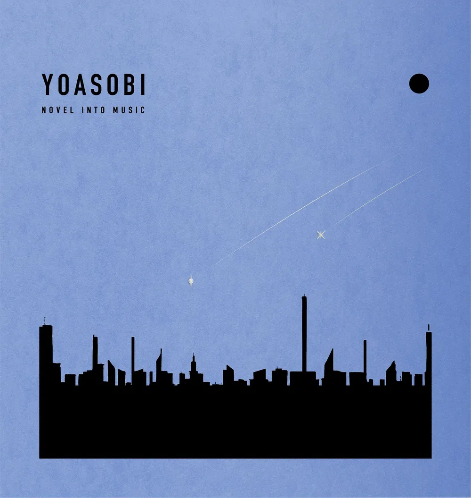
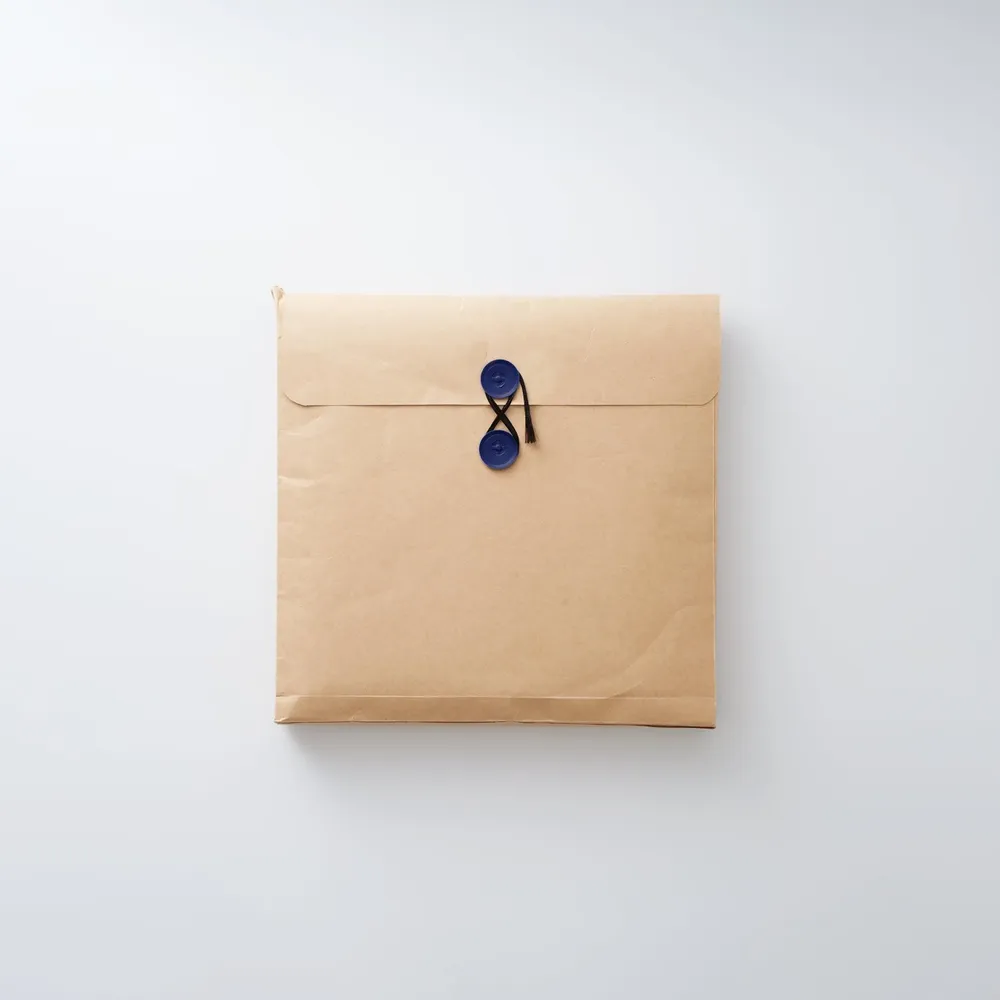

<!doctype html>
<html lang="ko">
<meta charset="utf-8">
<meta name="viewport" content="width=device-width, initial-scale=1">
<title>Records frame study</title>
<style>
  * { box-sizing: border-box; }
  body { margin: 0; font-family: system-ui, sans-serif; }
  section { padding: 30px; }
  .dark { background: #07101d; color: #f3f6fc; }
  .light { background: #f6f9ff; color: #172234; }
  h1, h2 { margin: 0 0 12px; font-size: 17px; }
  p { margin: 0 0 24px; font-size: 13px; opacity: .7; }
  .choices { display: grid; grid-template-columns: repeat(4, minmax(0, 1fr)); gap: 18px; max-width: 1120px; }
  .choice > b { display: block; margin-bottom: 8px; font-size: 13px; font-weight: 500; }
  .frame { display: flex; flex-direction: column; aspect-ratio: 1; padding: 4px; border-radius: 5px; overflow: hidden; }
  .frame img { display: block; width: 100%; height: 69%; object-fit: cover; }
  .info { display: flex; flex: 1; flex-direction: column; justify-content: center; gap: 4px; padding: 5px 10px; }
  .info strong { font-size: 14px; line-height: 1.2; }
  .info span { font-size: 11px; opacity: .7; }
  .dark .info { background: #101a2a; }
  .light .info { background: #fff; }
  .a { background: linear-gradient(135deg,#a5bdd6,#948ebd 58%,#687f9d); }
  .b { background: linear-gradient(130deg,#d4dce6,#8899ad 50%,#d0d8e4); }
  .c { background: linear-gradient(140deg,#dde9f3,#9caecb 50%,#ebeff4); }
  .d { background: linear-gradient(140deg,#556987,#8682a7 55%,#425977); }
  @media (max-width: 700px) { .choices { grid-template-columns: repeat(2, minmax(0, 1fr)); } }
</style>
<section class="dark">
  <h1>Records frame study · dark</h1>
  <p>같은 아트워크와 타이포그래피에서 프레임 색과 대비만 비교.</p>
  <div class="choices">
    <div class="choice"><b>A · muted blue lilac</b><div class="frame a"><div class="info"><strong>THE BOOK for,</strong><span>요아소비 · 앨범</span></div></div></div>
    <div class="choice"><b>B · soft metallic</b><div class="frame b"><div class="info"><strong>THE BOOK for,</strong><span>요아소비 · 앨범</span></div></div></div>
    <div class="choice"><b>C · snow light</b><div class="frame c"><div class="info"><strong>THE BOOK for,</strong><span>요아소비 · 앨범</span></div></div></div>
    <div class="choice"><b>D · navy lavender</b><div class="frame d"><div class="info"><strong>THE BOOK for,</strong><span>요아소비 · 앨범</span></div></div></div>
  </div>
</section>
<section class="light">
  <h2>Light</h2>
  <div class="choices">
    <div class="choice"><b>A · muted blue lilac</b><div class="frame a"><div class="info"><strong>Second Person</strong><span>요루시카 · 앨범</span></div></div></div>
    <div class="choice"><b>B · soft metallic</b><div class="frame b"><div class="info"><strong>Second Person</strong><span>요루시카 · 앨범</span></div></div></div>
    <div class="choice"><b>C · snow light</b><div class="frame c"><div class="info"><strong>Second Person</strong><span>요루시카 · 앨범</span></div></div></div>
    <div class="choice"><b>D · navy lavender</b><div class="frame d"><div class="info"><strong>Second Person</strong><span>요루시카 · 앨범</span></div></div></div>
  </div>
</section>
</html>
